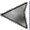

|  | License / Documentation home / Help and feedback |
The unit tester is a GUI tool which simulates either a server or a Hub. As a Hub, it connects to a server and allows the user to send messages to the server and monitor responses just as the Hub would. As a server, it connects to a listener in the Hub and gives the user the appropriate facilities to interact with the Hub as a server would. In both case, the unit tester can send new messages, or respond to new messages it receives.
[Unit tester exercise 1]You'll see a process monitor window with two panes, one of which starts the Parser and the other of which starts the unit tester. The command line for the unit tester looks like this:
Unix:
% process_monitor $GC_HOME/tutorial/servers/parse-hub.config &
Windows:
c:\> python %PM_DIR%\process_monitor.py %GC_HOME%\tutorial\servers\parse-hub.config
[Unit tester Hub command line]The --as_hub argument configures the unit tester to pretend to be a Hub; the --frames argument provides a file containing a list of frames which the unit tester will be able to use as new messages; and the final two arguments are the host and port of the server to contact.$PYTHONBIN $UNIT_TEST/unit_tester.py --as_hub --frames $GC_HOME/tutorial/servers/parse.frames localhost 10000
Start the Parser server and then the unit tester. You'll get a window like this:
As the unit tester sends and receives messages, it will update its scrollable output history.
Press the "Send new message" button. You'll get a second window:
This window allows you to enter a new message to send to the server. You can either type in the new message in the new message typein window using the printed representation of frames, or you can select a frame from the mouseable frame history using the left mouse button. This frame will be entered in the new message typein window, and you can edit the frame or use it as is.
The "Reply required" radio button allows you to control whether the message you're sending requires a reply or not. You'll learn more about how to control this aspect of the message later. We'll ignore the "Session ID" typein window and the "Lock Session" radio button for the moment.
First, the scrollable output history will now have the following contents:
[Scrollable output history]This history indicates that the unit tester sent the message described, and received a reply containing the :frame key which contains the parse. We can see the same thing if we look at the process monitor pane for the Parser:[Sending: new message]
{c Parser.Parse
:input_string "I WANT TO FLY FROM BOSTON TO LOS ANGELES" }
[Received: reply message]
{c Parser.Parse
:frame {c flight
:origin "BOSTON"
:destination "LOS ANGELES" } }
[Parser process monitor pane]We've seen this sort of output before, in the server processing for the toy travel demo. In both cases, we can see that the input and output correspond to the documentation for the Parser server.
Received new message from 127.0.0.1
{c Parser.Parse
:input_string "I WANT TO FLY FROM BOSTON TO LOS ANGELES"
:hub_opaque_data {c admin_info ... } }
Invoking dispatch function: Parse
Returning result frame to 127.0.0.1
{c Parser.Parse
:frame {c flight ... }
:hub_opaque_data {c admin_info ... } }
Next, press the "Send new message" button again. Notice that the mouseable frame history now has the message reply in its history, along with the message it sent. Select the first Parser.Parse frame again, and delete Parser. from the frame name in the new message typein window (you can do this by selecting the text and pressing the <Del> key on your keyboard). The contents of the new message typein window should now look like this:
[New message typein window]Now press the Reply Required button and then OK. The result is the identical, except that the frames are named Parse instead of Parser.Parse. This interaction demonstrates how the server ignores the prefixes.{c Parse
:input_string "I WANT TO FLY FROM BOSTON TO LOS ANGELES" }
Finally, press the "Send new message" button again, and select the frame named UserInput (you may have to scroll back to the top of the mouseable frame history). You may recognize this name as the name of the program which handles general input in the toy travel demo. Press the Reply Required button and then OK. The result this time is very different. The message history now contains a different type of response:
[Scrollable output history]So instead of providing a normal response, the server responded with an error, because the name of the message the server received doesn't correspond to any dispatch function it knows about. (We'll learn more about error handling later.)[Sending: new message]
{c UserInput
:input_string "I WANT TO FLY FROM BOSTON TO LOS ANGELES" }
[Received: error message]
{c system_error
:err_description "Function UserInput does not exist"
:errno 1 }
Select "File --> Quit" in the process monitor to end this exercise.
[Unit tester exercise 2]You'll see a process monitor with three panes: one for the Parser server, as before; one for the Hub; and third for the unit tester, acting as a server. The command line for the unit tester should look like this:
Unix:
% process_monitor $GC_HOME/tutorial/servers/parse-server.config &
Windows:
C:\> python %PM_DIR%\process_monitor.py %GC_HOME%\tutorial\servers\parse-server.config
[Unit tester server command line]The --as_server argument instructs the unit tester to act as a server; the --service_type argument tells the unit tester which service type the Hub has set up the listener for; the rest of the arguments are as before. Start the Parser, then the Hub, and finally the unit tester.$PYTHONBIN $UNIT_TEST/unit_tester.py --as_server --service_type UI --frames $GC_HOME/tutorial/servers/parse.frames localhost 14500
When you start the unit tester, you'll get the toplevel window containing the scrollable output history, as before, but you'll also get a second window, which looks like this:

Press the "Send new message" button and select the frame named UserInput. Although we won't look at it in detail until the next lesson, there's a Hub program named UserInput defined in the Hub script we're currently running, and this program calls the Parser.Parse operation. Press "Reply Required" and then OK. The Hub pane in the process monitor should look something like this:
[Hub pane]We should already be familiar with a number of aspects of this interaction. We see that the Hub received a new message, which it used to instantiate a token with index 1. It found a program named UserInput (although this isn't obvious from the printout), found the Parser.Parse operation, dispatched the message, updated the token with the :frame key which was returned, and, after the program was complete, returned the result to the unit tester (which had contacted the listener for the UI service type). This is a scripted interaction.Got new message from provider for UI (id 2)
Provider for UI (id 2) requested a reply
Created token 1----------------[ 1]----------------------
{c UserInput
:input_string "I WANT TO FLY FROM BOSTON TO LOS ANGELES"
:session_id "Default"
:tidx 1 }
----------------------------------------
----------------[ 1]----------------------
{c UserInput
:input_string "I WANT TO FLY FROM BOSTON TO LOS ANGELES"
:session_id "Default"
:tidx 1 }
--------------------------------------------Found operation for token 1: Parser.Parse
Serving message with token index 1 to provider for Parser @ localhost:10000
---- Serve(Parser@localhost:10000, token 1 op_name Parse)
Got reply from provider for Parser @ localhost:10000 : token 1
----------------[ 1]----------------------
{c UserInput
:input_string "I WANT TO FLY FROM BOSTON TO LOS ANGELES"
:session_id "Default"
:tidx 1
:frame {c flight ... } }
----------------------------------------Done with token 1 --> returning to owner UI@<remote>:-1
Destroying token 1
The scrollable output history in the unit tester shows the other side of this interaction:
[Scrollable output history]Notice that the response here is a little different than in the case where the unit tester is pretending to be the Hub. In this case, we get the entire contents of the token back, which contains both the original :input_string key and also the :frame response.[Sending: new message]
{c UserInput
:input_string "I WANT TO FLY FROM BOSTON TO LOS ANGELES" }
[Received: reply message]
{c UserInput
:frame {c flight
:origin "BOSTON"
:destination "LOS ANGELES" }
:session_id "Default"
:input_string "I WANT TO FLY FROM BOSTON TO LOS ANGELES" }
Next, press "Send new message", and select the frame named Parser.Parse. In this case, there isn't going to be a program named Parser.Parse, but there is a server named Parser which supports the Parse message. So in this case, we'll have a scriptless interaction. Press "Reply Required" and then OK. In this case, we'll have a slightly different output. First, the Hub pane:
[Hub pane]The interaction is a little simpler. Notably, there's no accumulated token state, because there's no program matched. The state of the token is simply the response from the dispatch function, which contains :frame but not :input_string, as we saw in the first exercise. Again, the scrollable output pane confirms this:Got new message from provider for UI (id 2)
Provider for UI (id 2) requested a reply
Created token 2----------------[ 2]----------------------
{c Parser.Parse
:input_string "I WANT TO FLY FROM BOSTON TO LOS ANGELES"
:session_id "Default"
:tidx 2 }
----------------------------------------Serving message with token index 2 to provider for Parser @ localhost:10000
---- Serve(Parser@localhost:10000, token 2 op_name Parse)
Got reply from provider for Parser @ localhost:10000 : token 2----------------[ 2]----------------------
{c Parser.Parse
:frame {c flight ... }
:session_id "Default"
:tidx 2 }
----------------------------------------Done with token 2 --> returning to owner UI@<remote>:-1
Destroying token 2
[Scrollable output pane]The response received by the unit tester contains only the :frame key.[Sending: new message]
{c Parser.Parse
:input_string "I WANT TO FLY FROM BOSTON TO LOS ANGELES" }
[Received: reply message]
{c Parser.Parse
:frame {c flight
:origin "BOSTON"
:destination "LOS ANGELES" }
:session_id "Default" }
Finally, press "Send new message", and select the first Parser.Parse frame again, and delete Parser. from the frame name as you did in exercise 1. Press "Reply Required" and then OK. The result should be exactly the same as if you hadn't removed the Parser. from the frame name. The reason for this, you may recall, is that server name "addresses" are optional, and the Hub will try to find a server which supports the named message. In this case, there's only one (Parser), and the Hub uses it.
Now, select "File --> Quit" in the process monitor to end this exercise.
Next: Writing a basic Hub program file
| License / Documentation home / Help and feedback |